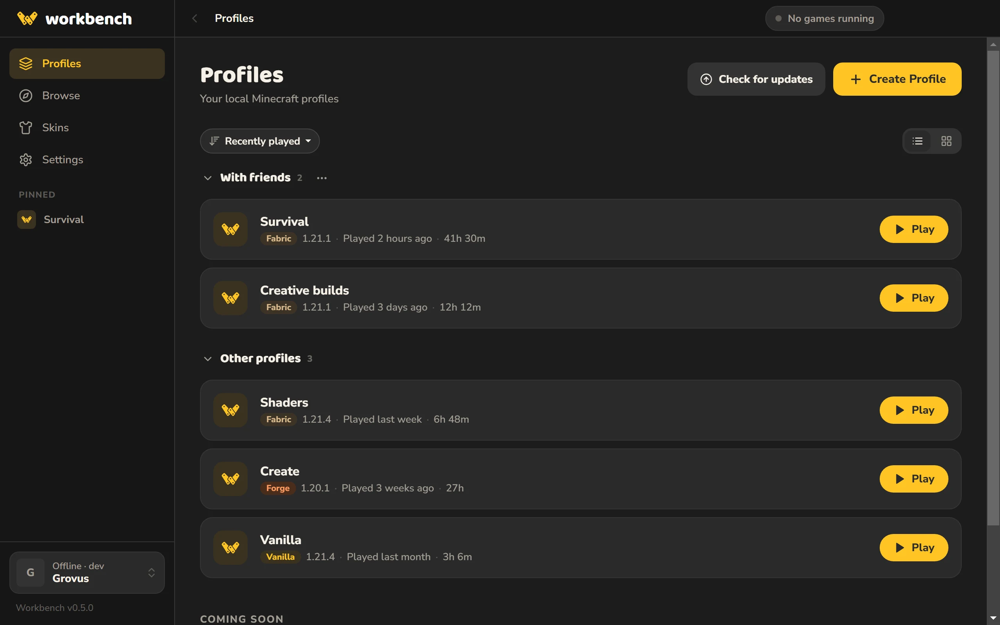
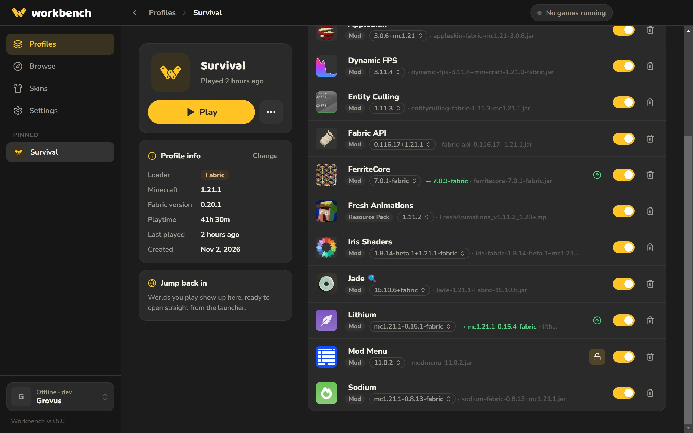
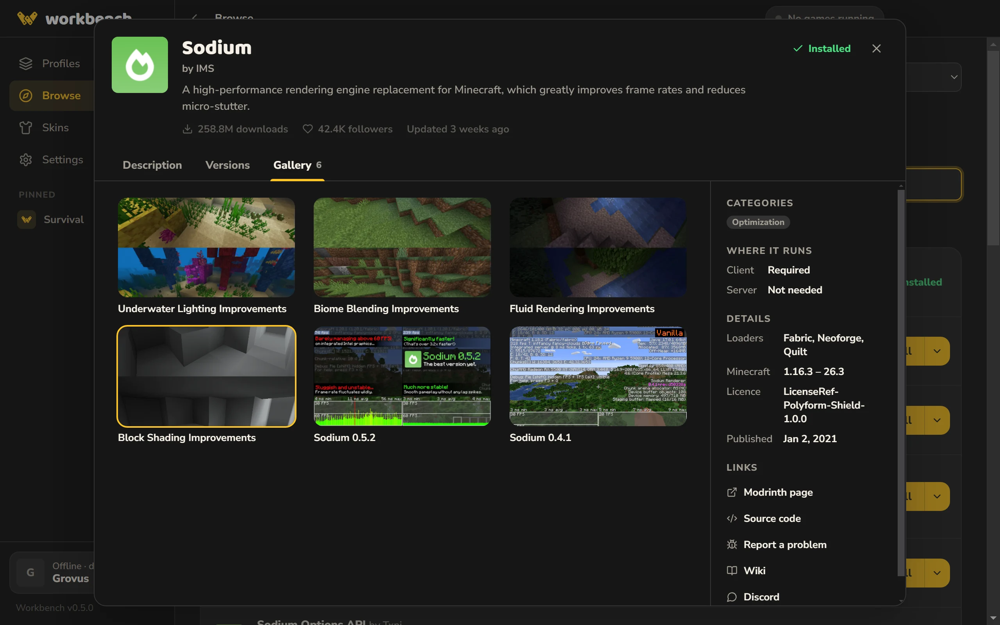
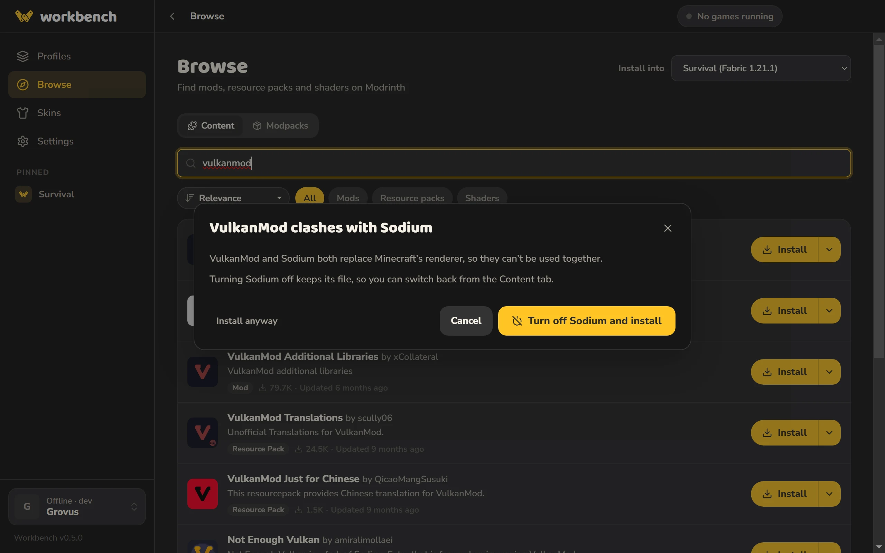
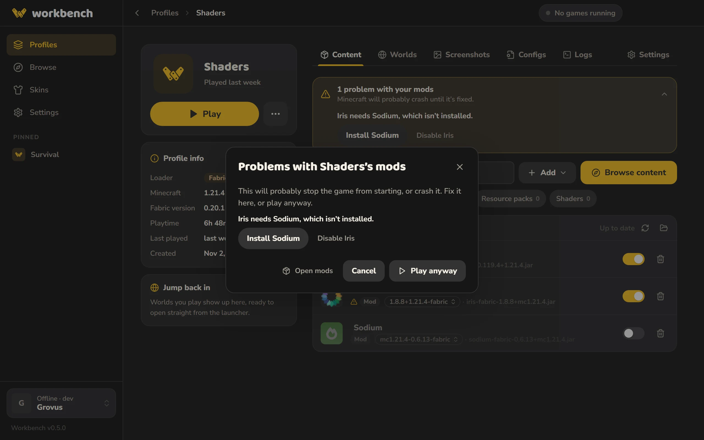
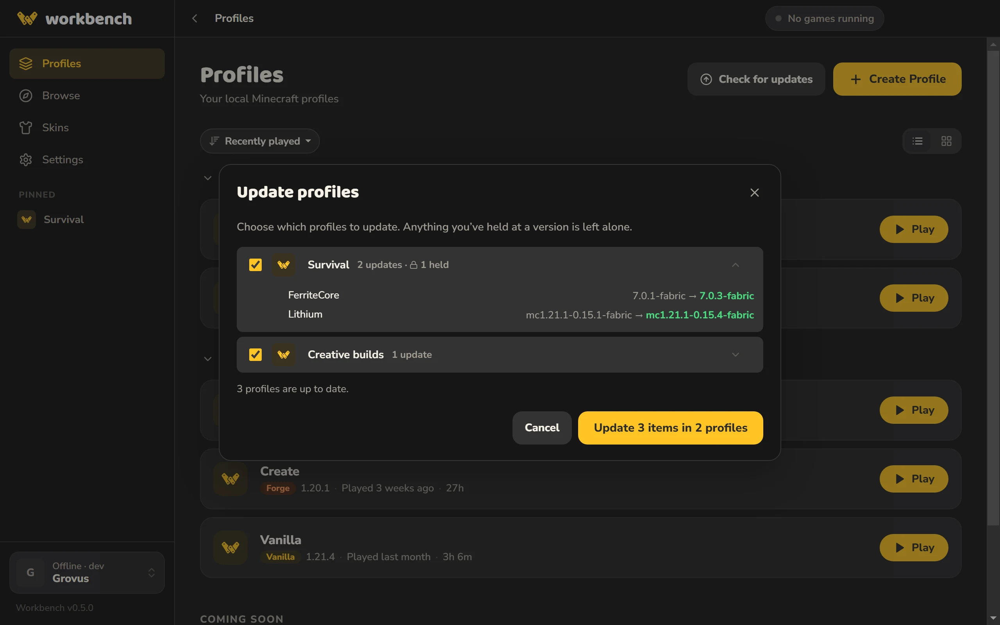
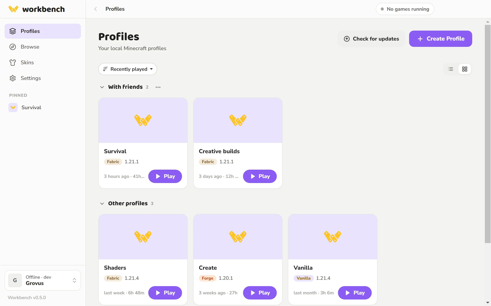
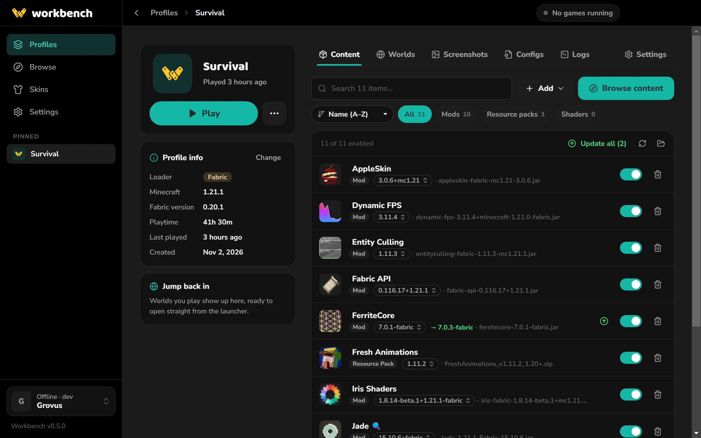

A Minecraft launcher for everyone.
Play any version, add mods in a click, and keep all your worlds and setups tidy. Free, with no ads, and easy from the start.

No ads
Workbench doesn’t show ads, sponsored mods or upgrade prompts. It opens to your profiles.
Profiles
Make a profile for each way you play: plain Minecraft, a modded world with friends, a shader setup for screenshots. Each one keeps its own mods, worlds and settings, so nothing gets mixed up.

Mods, resource packs and shaders
Browse thousands of mods, resource packs, shaders and modpacks from Modrinth right inside the launcher. Workbench only shows what works with your version and installs anything else they need.

Mod compatibility
Workbench checks your mods at three points, so problems get caught early.
- Before you install Workbench warns you if a mod won’t get along with one you already have, and can switch the old one off for you.
- Before you play It checks for missing mods, the wrong Minecraft version and doubles, with a one-click fix for each.
- If it crashes anyway It reads the crash, tells you what went wrong in plain English, and offers the fix.


Updates
Update everything at once, or keep a mod on the version you like. Workbench updates itself too.

Customization
- Themes Pick one from bright to pitch black, or build your own from three colors and share it with a code.
- Colors and backgrounds Choose any color for buttons and highlights, and put your own picture in the background.
- Your layout Make everything bigger or smaller, switch to compact lists or grids, and group and pin your favorites.


Questions
Is Workbench vibecoded?
Unfortunately, partially. I’m still learning. I did as much as I could myself, but I’m not perfect. I use AI tools like claude to help me fix issues I run into, so I can learn how to overcome them myself later. I plan to go over everything at a later date and clean it up, removing AI code and making the app better.
Claude assisted in the backend and making sure everything works as intended. Most of the frontend and all of the branding, including the logo, layouts, and design of the launcher is hand-made by me.
Being upfront about this matters a lot to me. If it puts you off Workbench, I understand. It’s also the whole reason I’m not promoting Workbench anywhere, and only sharing it by word of mouth.
Windows says it’s from an unknown publisher. Is it safe?
Yes. The installer isn’t signed yet, so Windows doesn’t recognize it. Choose More info, then Run anyway. All the code is on GitHub.
My Mac says Workbench is damaged or can’t be opened. What do I do?
Nothing is wrong with it. The Mac app isn’t signed with a paid Apple developer certificate yet, so macOS blocks it the
first time. Drag Workbench into Applications, open Terminal, run
xattr -cr /Applications/Workbench.app, then open Workbench again. You only need to do this once.
For the same reason, Workbench can’t update itself on a Mac. It tells you when there’s a new version and opens the download for you.
How do I run it on Linux?
Download the AppImage, make it runnable (right-click → Properties → Allow executing, or
chmod +x Workbench-*.AppImage), then open it. If it won’t start on a newer Ubuntu, install
libfuse2 first.
Can I sign in with my Microsoft account?
Not yet. Microsoft has to approve new launchers first, and that’s on its way. Until then you can play singleplayer and on LAN.
Do I need to know anything about mods?
No. You can just press Play. If you want mods later, Workbench helps you find ones that work together.
Does it work on Mac or Linux?
Yes. Workbench runs on Windows 10 and 11, on macOS 11 or newer (Apple Silicon and Intel), and on most Linux systems.
Does it cost anything?
No, it’s free.